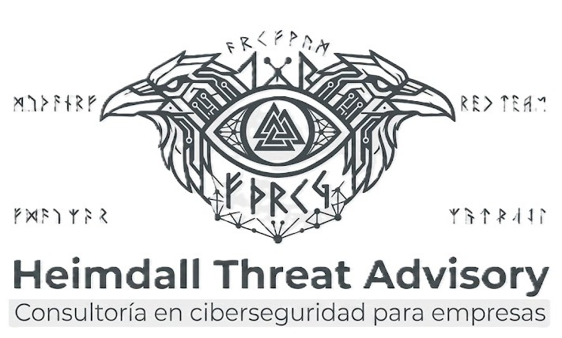

Exposición
¿Que puede ver y descubrir un atacante desde Internet?

Evaluamos la exposición, validamos los riesgos y proporcionamos evidencia para apoyar la toma de desiciones estrategicas y de seguridad.
La seguridad no puede depender únicamente de herramientas. Reducir la incertidumbre comienza por conocer qué está expuesto, qué puede ser aprovechado por un atacante y qué riesgos requieren atención.
¿Que puede ver y descubrir un atacante desde Internet?
¿Qué debilidades son realmente explotables?
¿Qué significa esto para la organización y qué deberia atenderse?
Servicios orientados a conocer la exposición, validar riesgos y convertir información técnica en decisiones útiles para la organización.
Conozca qué información, infraestructura y servicios pueden ser identificados desde Internet y qué exposición representan para la organización.
Cloud · Infraestructura propiaValide técnicamente las debilidades identificadas y determine cuáles son realmente explotables y qué controles reducen su riesgo.
Activo único · Multi-activoConvierta los resultados técnicos en información útil para comprender el impacto, priorizar acciones y respaldar decisiones.
Riesgo · Priorización · DecisiónDesarrolle el criterio necesario para reconocer riesgos, comprender la perspectiva del atacante y actuar preventivamente.
General · Técnico · EjecutivoManejo un Proceso de Validación Técnica Basada en Evidencia (PVTE) para validar los hallazgos antes de incorporarlos a los reportes.
El objetivo es reducir al mínimo los falsos positivos, optimizar los recursos y el tiempo de la organización al proporcionar información útil para la toma de decisiones.
El proceso utiliza marcos de referencia reconocidos como PTES, ISO 27001 y CVSS, cuando corresponde al tipo de evaluación.
Identificación de activos y superficie de ataque.
Establecemos qué activos, servicios e información forman parte del alcance y cuáles pueden ser identificados desde la perspectiva de un atacante.
Confirmación manual de los hallazgos.
Los hallazgos se revisan y validan manualmente, evitando depender exclusivamente de resultados automatizados.
Resultados sustentados en evidencia reproducible.
Cada hallazgo confirmado se documenta mediante evidencia suficiente para permitir su revisión y comprensión.
Riesgo según el contexto real.
La criticidad no se determina únicamente mediante una puntuación. Se considera el contexto del activo, exposición, impacto y controles visibles.
Información clara para cada nivel de decisión.
Los resultados se presentan de forma técnica y ejecutiva, permitiendo que la organización comprenda qué ocurre, cómo afecta al negocio y dónde actuar.